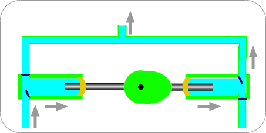
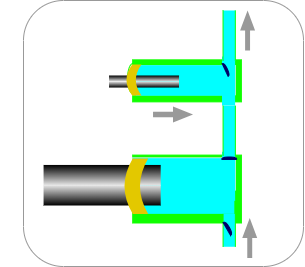
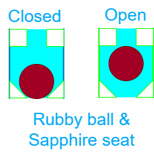

Single-Plunger Reciprocating Pumps
The basic design of a pump for early LC systems featured a single piston or plunger in the pump head, making it a single-piston/plunger pump. Its flow rate was controlled by adjusting the piston stroke with a large micrometer mounted on the pump. This type of pump was compact, affordable, and continuously delivered, making it a staple in HPLC solvent delivery. However, the pulsed flow caused by the piston recharge cycle was a weakness of the single-piston reciprocating pump.
The single-acting pumps displaced only one volume of the mobile phase per cycle, resulting in large pulses in flow and pressure. This was not ideal for maintaining a constant flow and even pressure, which was necessary for satisfactory detector performance. Early HPLC systems addressed this issue by including pulse dampers, while later designs incorporated shaped driving camshafts and variable-speed motors to reduce the fill portion of the pump cycle and improve delivery smoothness. Despite these improvements, the flow and pressure challenges inherent in single-piston pumps were not completely resolved.
Dual piston/plunger pumps
Dual-plunger pumps are a solution to the issue of flow and delivery pulses in single-plunger pumps. These pumps are widely used today and come in two types: in-parallel and in-series.
Dual-plunger in parallel

In-parallel pumps use two pumps that operate 180° out of phase to counteract the pulses of a single-plunger pump. These pumps are driven by a single cam, with one pump head filling while the other delivers. The output of the pumps is combined to ensure a constant flow, making them highly effective in LC pump design. Although less common in the analytical pumps market, dual-piston in-parallel pumps have been reintroduced in some UHPLC pumps, such as the Shimadzu AD models and the Thermo Vanquish pumps.
Dual plunger in-series
The dual-plunger in-series pump, also known as the accumulator plunger design, is commonly used in modern (U)HPLC systems. It consists of two plungers, with one delivering a single or mixed solvent to the other, known as the high-pressure plunger or accumulator. The two plungers have different displacement volumes and deliver at different rates, allowing for accurate compositional control and less pulsation. The pump has three check valves - an outlet, an inlet, and a middle check valve that acts as an inlet check valve for the top plunger and an outlet check valve for the bottom plunger. In one cycle, the top plunger delivers 1 mL/min to the column, with the outlet check valve open and the middle check valve closed, while the bottom plunger fills at 2 mL/min with an inlet check valve open and the middle check valve closed. In the alternate cycle, the bottom plunger delivers at 2 mL/min, with 1 mL/min serving to fill the top piston and the other 1 mL/min flowing to the column. Thus, 1 mL/min of mobile phase always flows to the column.

The accumulator plunger pump is preferred for its highly accurate compositional control and less pulsation, making it a popular choice for many (U)HPLC systems. It is used in various systems, including Agilent’s 1100, 1200, and 1260 with single motor design, Agilent 1290 with independent plunger drives, and Waters Alliance and Acquity UPLC instruments with independent plunger drives. The pump design has only three check valves, which is argued by manufacturers to enhance reliability compared to the dual in-parallel design. Additionally, the accumulator plunger pump usually has only one traditional ball-type check valve between the two plunger chambers, as there is no need for an outlet check valve since either the top or bottom plunger is always supplying flow to the column.
Check Valves
The check valves play a crucial role in controlling the flow direction of the mobile phase in the pump. They consist of a ruby ball and a sapphire seat that are lapped to ensure a tight seal when the ball is resting on it. The valves operate based on pressure and gravity to open and close.

Despite their importance, check valves are often the least reliable parts of the pump. The most common design includes a ruby ball and sapphire seat that are slightly ground or “lapped” to match the curvature of the ball for better sealing. When the pressure beneath the check valve is higher than above it, the ball is lifted from the seat, allowing solvent to flow through the hole in the seat. When the pressure is equal on both sides of the valve or higher on the top, the ball settles onto the seat, providing a seal.
Inlet check valves are more prone to sticking than outlet check valves because of the pressure within the pump. To address this issue, many pumps now feature “active” check valves on the pump inlet. These valves use mechanical assistance, such as a spring and solenoid-actuated lifting device, to ensure proper seating and prevent sticking. The active check valve design is more reliable and is not subject to sticking when using acetonitrile.
It is worth noting that the inlet check valves of many modern UHPLC pumps use active check valves, regardless of whether the in-parallel or accumulator-plunger design is employed. This ensures consistent and reliable performance, critical for accurate and precise separation and analysis in chromatography.
The pump seal
The pump seal is an essential component in preventing leakage of the mobile phase and air from entering during filling. It consists of a polymeric ring that encircles the plunger with a groove containing a spring on the high-pressure side. The spring helps to create a better seal by pulling the lip of the seal against the piston. The high liquid pressure in the pump chamber also aids in pushing the lip of the seal against the surface of the plunger, acting like a squeegee to keep the mobile phase within the pump chamber. Although the sealing process is not perfect, it allows a thin film of mobile phase to remain on the plunger surface, lubricating the plunger-seal interface and preventing premature wear of the seal. Proper maintenance and replacement of the pump seal are crucial for optimal performance and longevity of the pump.